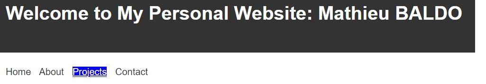

Project 2
Use poe (CHAT GTP 3.5) to create my first website
On index page change the font size when we go above the nav elements => but it makes all the text shift
So I decided to just highlight the background in blue and change the text color in white
See sccreen shot below

This was realized with CSS
.title {
transition: transform 0.3s ease;
}
.title:hover {
background-color: blue;
color: white;
}